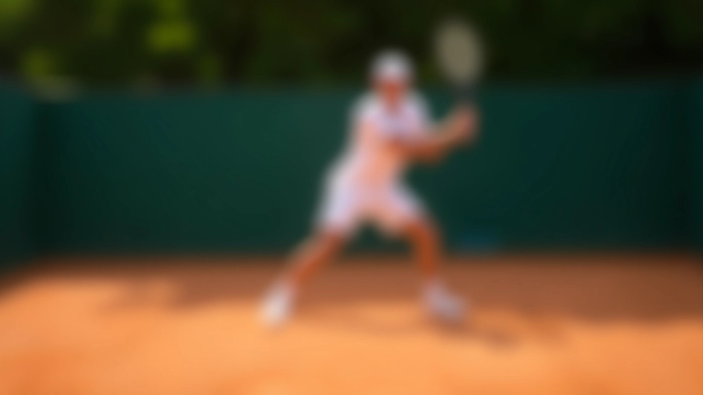
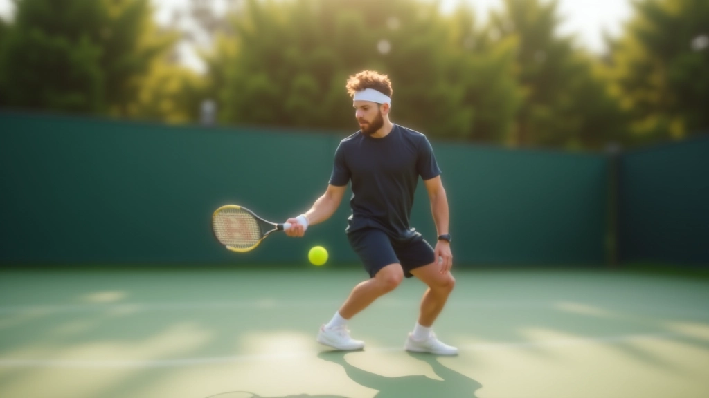
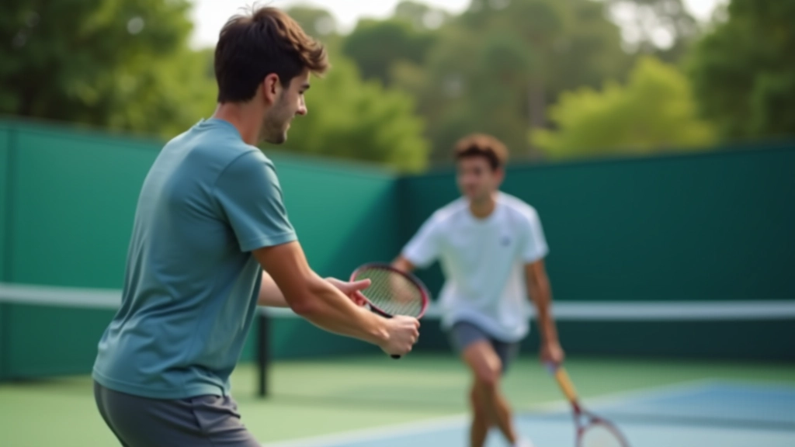

أساسيات الضربة الخلفية باليدين للمبتدئين
تعلم الخطوات الأساسية والموضع الصحيح والقبضة المناسبة

اكتشف التمارين والتدريبات التي تساعدك على زيادة قوة وسرعة ضربتك الخلفية بشكل ملحوظ وآمن

الكاتب
فريق التحرير والمراجعة
كتبه فريق تحرير أكاديمية الضربة الخلفية، متخصص في تقديم إرشادات عملية وسهلة المتابعة للاعبين والمدربين.
القوة الحقيقية في الضربة الخلفية لا تأتي من الذراعين فقط. هذا شيء يفهمه اللاعبون المحترفون جيداً. الأساس يكمن في الأرجل والجسم والموضع الصحيح. عندما تكون قدماك في المكان المناسب — مع توزيع متوازن للوزن — كل شيء آخر يصبح أسهل.
نبدأ بالقاعدة. تأكد من أن قدميك بعرض الكتفين تقريباً. الرجل الخلفية — الجانب البعيد عن الشبكة — يجب أن تكون متقدمة قليلاً. هذا يعطيك استقراراً طبيعياً. ثم تأتي دورة الجسم. تدوير الأكتاف والوركين معاً. لا تحاول استخدام ذراعيك وحدهما لتوليد السرعة. ستضيع الكثير من القوة بهذه الطريقة.

النقطة المهمة: الطاقة تنتقل من الأرض — من قدميك — صعوداً عبر الجسم ثم إلى الذراعين. إذا أهملت البداية، فستفقد 40% من القوة المحتملة.

هناك ثلاثة تمارين نستخدمها في التدريب المكثف. الأول هو التمرين بدون كرة — ما نسميه "shadow practice". تقوم بنفس الحركة تماماً، لكن بدون كرة. هذا يسمح لك بالتركيز على السرعة النقية والتكنيك. تكرر 20 حركة بسرعة عالية، ثم خذ استراحة 30 ثانية. افعل هذا 5 مجموعات.
الثاني هو تمرين "ميني كرات" — كرات تنس صغيرة وخفيفة. السرعة ستكون أعلى بكثير لأن الكرة أخف. تدريب جسمك على السرعة. والثالث؟ تمارين المقاومة. شريط مرن أو حبل مقاومة مربوط بقوة. أنت تقاوم الحركة — تحاول عكس اتجاهك. يبني هذا القوة والسرعة معاً.
تمارين shadow practice و mini كرات. 45 دقيقة. التركيز على السرعة والتكنيك النظيف.
تمارين مقاومة وتدريب قوة الأساس. 40 دقيقة. تمارين تركز على الأرجل والجذع.
كرات عادية وممارسة لعبة. 60 دقيقة. تطبيق التحسينات في موقف حقيقي.
أول خطأ؟ الوقوف بثبات زائد. بعض اللاعبين يقفون كأنهم متجمدون. لا يمكن لجسدك أن يتحرك بسرعة إذا كنت متصلباً. تحتاج إلى حركة صغيرة قبل أن تبدأ الضربة. خطوة صغيرة تجاه الكرة. هذا ينشط عضلاتك.
الخطأ الثاني هو إبقاء المرفقين بعيداً جداً عن الجسم. عندما تشعر بأن ذراعاك تتحركان بشكل مستقل عن جسدك — أنت تفعل شيئاً خاطئاً. المرفقان يجب أن يبقيا قريبين. الثالث؟ الانتظار طويلاً لتحريك رجليك. تحتاج إلى البدء بحركة الأرجل في اللحظة التي ترى فيها الكرة تقترب من خصمك.
"السرعة لا تأتي من محاولة ضرب الكرة بقوة أكبر. تأتي من تحريك جسمك بشكل صحيح. التقنية أولاً، ثم القوة ستتبع."
مبدأ أساسي في تدريب التنس

لا تتوقع نتائج بعد أسبوع واحد. هذا ليس كيف يعمل التقدم الحقيقي. معظم اللاعبين يلاحظون تحسناً حقيقياً بعد 4 إلى 6 أسابيع من التدريب المتسق. والقصد بـ "متسق" هو فعلاً — 4 إلى 5 أيام في الأسبوع.
الأشياء ستبدو غريبة في البداية. جسمك معتاد على الطريقة القديمة. الآن تحاول تغييرها. سيشعر ذراعاك بالتعب. ستشعر بألم عضلي — وهذا طبيعي. لا تخلط بينه وبين الألم الحاد (الذي يعني توقف فوري). مع الوقت، تصبح التحركات الجديدة طبيعية. ثم تصبح سريعة. ثم تصبح قوية.
نتائج التدريب تختلف من شخص لآخر. العمر والمستوى الحالي والالتزام بالتدريب — كل هذا يؤثر على معدل التقدم. هذه الإرشادات موضوعة بناءً على ممارسات تدريب معترف بها، لكن يُنصح دائماً باستشارة مدرب متخصص قبل البدء ببرنامج تدريبي جديد.
تحسين القوة والسرعة في الضربة الخلفية ممكن. ليس سحراً — إنه تدريب منظم وصبر وتركيز على التقنية الأساسية. ابدأ بالقاعدة. افهم كيف ينتقل الطاقة من جسمك. ثم مارس التمارين بانتظام. ستندهش من الفرق الذي ستشعر به بعد بضعة أسابيع.
هل تريد المزيد من الإرشادات؟
اطّلع على جميع أدلة الضربة الخلفية